Ejercicio 2
Instalación en Windows:
Primero nos dirigimos a la
página de XAMPP. Hacemos click en la última versión de Windows.
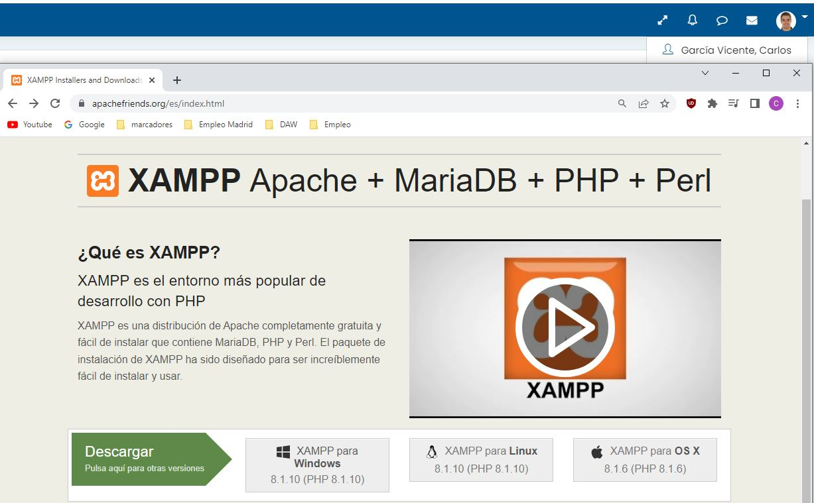
Descargamos la última versión:
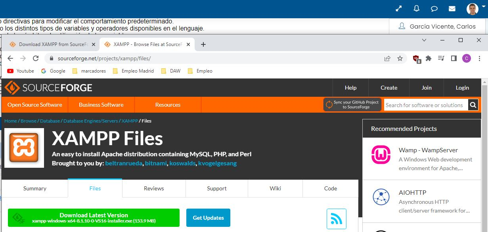
Iniciamos el instalador:
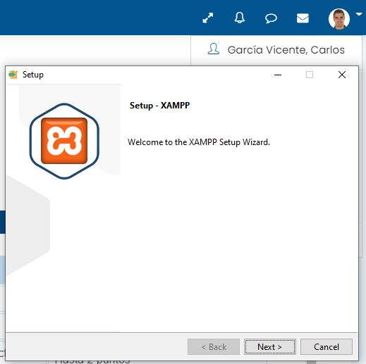
Seleccionamos los componentes a instalar (dejo todos marcados):
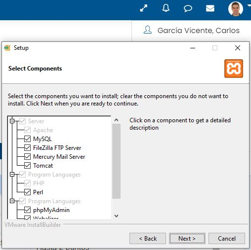
Seleccionamos dónde instalar la carpeta (la ruta default está bien):
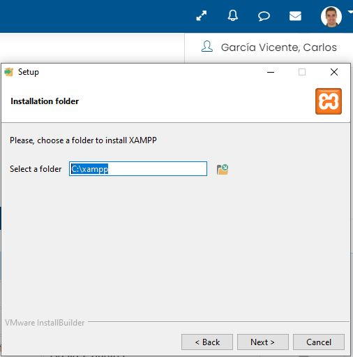
Seleccionamos el idioma a usar en el programa (dejo inglés):
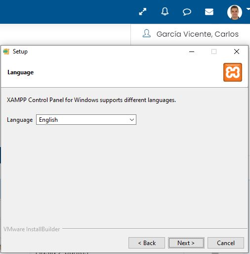
Ya podemos empezar la instalación:
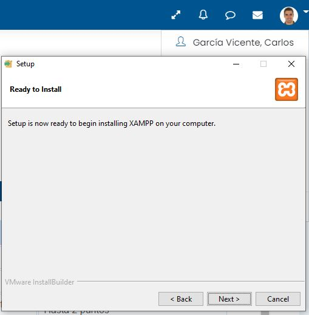
Esperamos a que se complete la instalación:
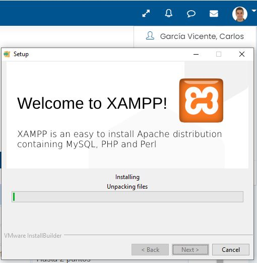
Una vez completada la instalación ya podríamos abrir XAMPP Control
Panel:
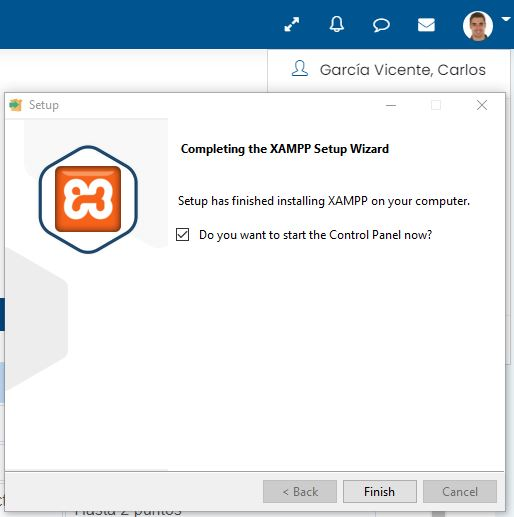
Instalación en Linux:
Primero nos dirigimos a la
página de XAMPP. Hacemos click en la última versión de Linux.
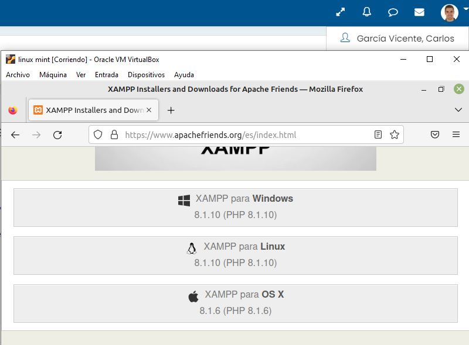
Descargamos la última versión:
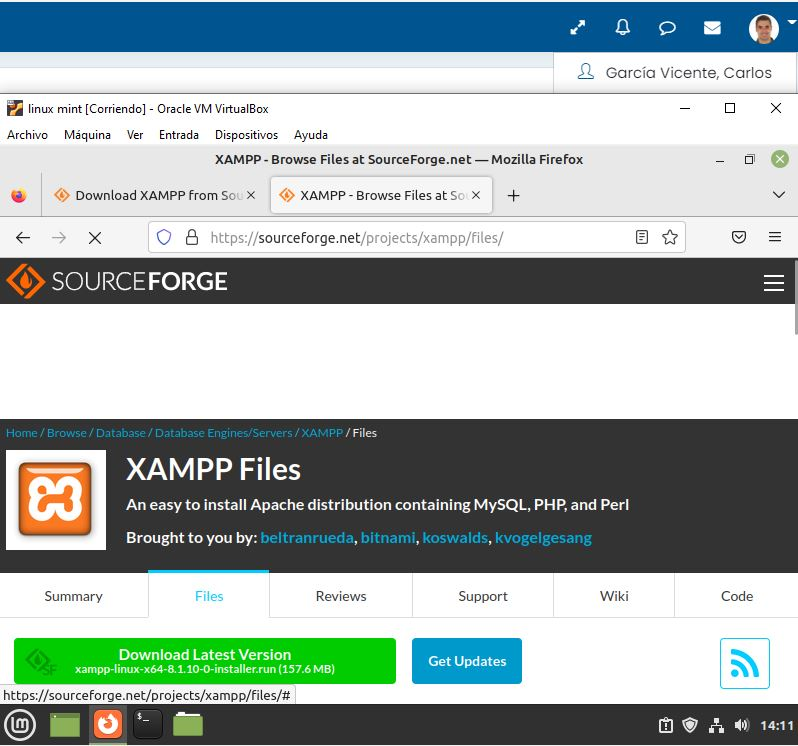
Damos todos los permisos al archivo e iniciamos el instalador:
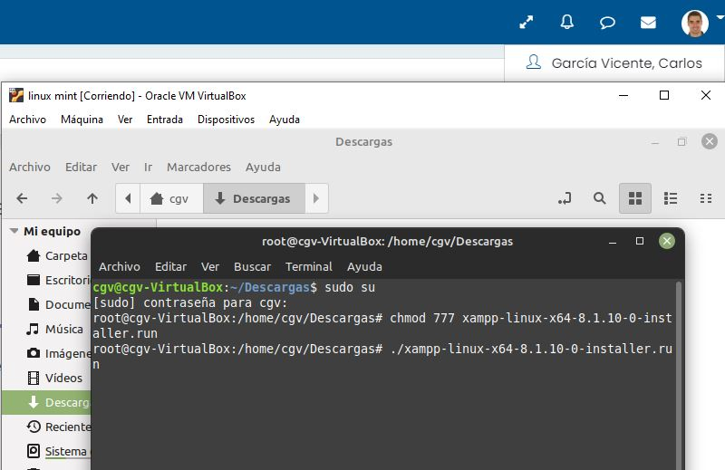
Empezamos la instalación:
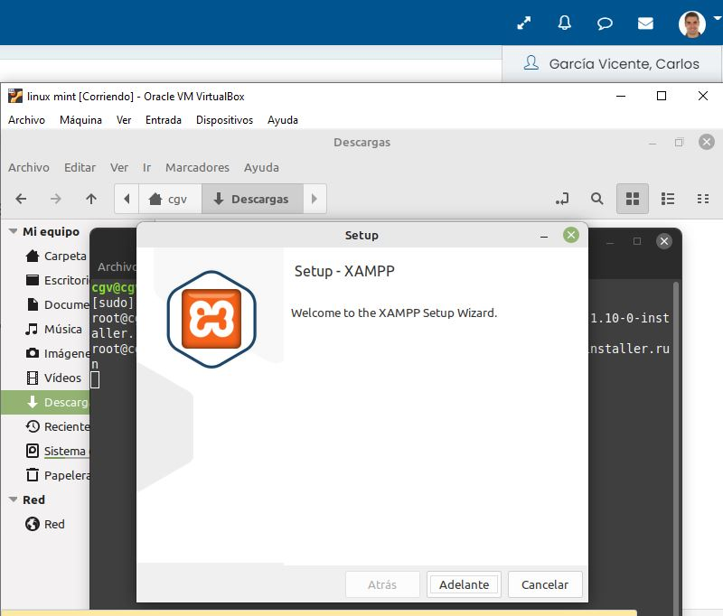
Seleccionamos los componentes a instalar (dejo todos marcados):
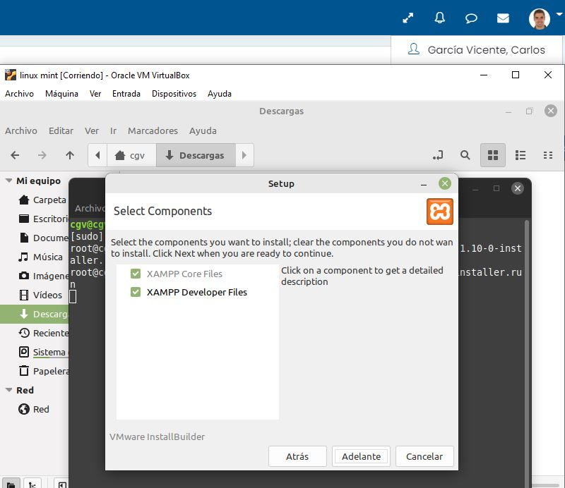
Nos indica la ruta donde se instalará XAMPP:
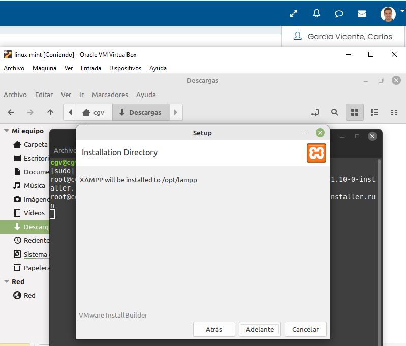
Ya podemos empezar la instalación:
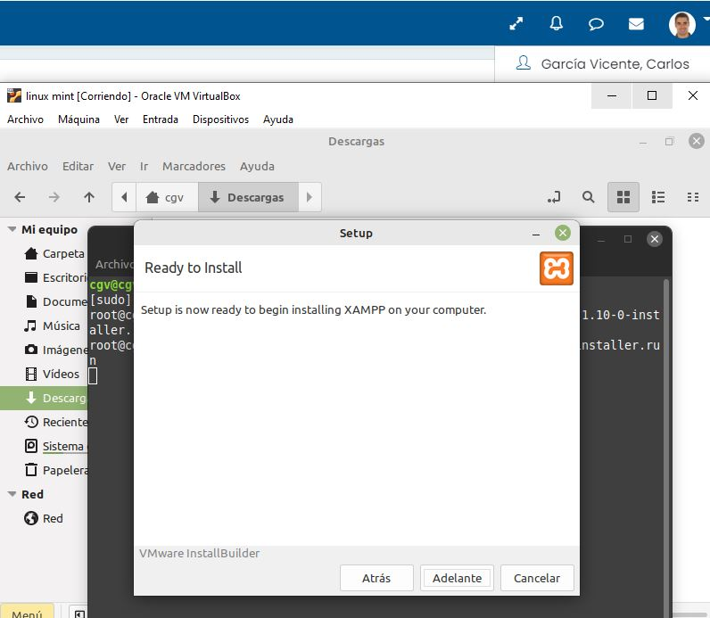
Esperamos a que se complete la instalación:
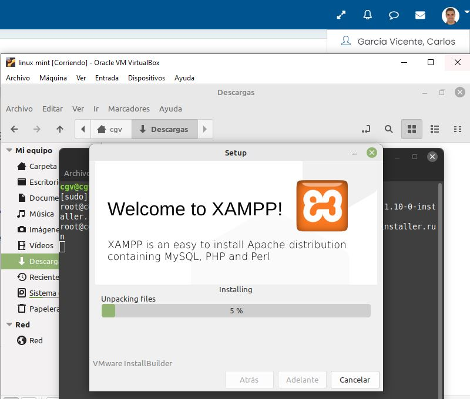
Una vez completada la instalación ya podríamos abrir XAMPP:
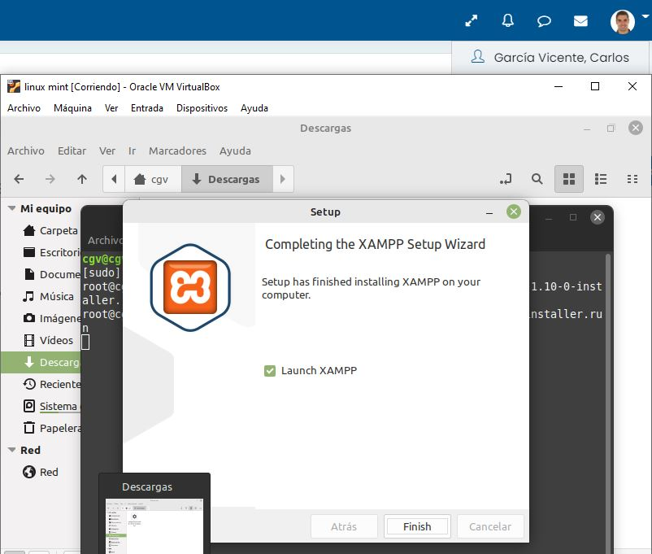
Código PHP puro y código PHP embebido:
El código PHP puro es simplemente código PHP sin otros lenguajes de por
medio:
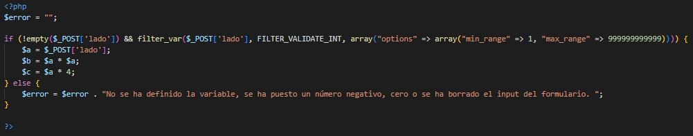
El código PHP embebido es básicamente escribir PHP dentro de etiquetas
HTML:
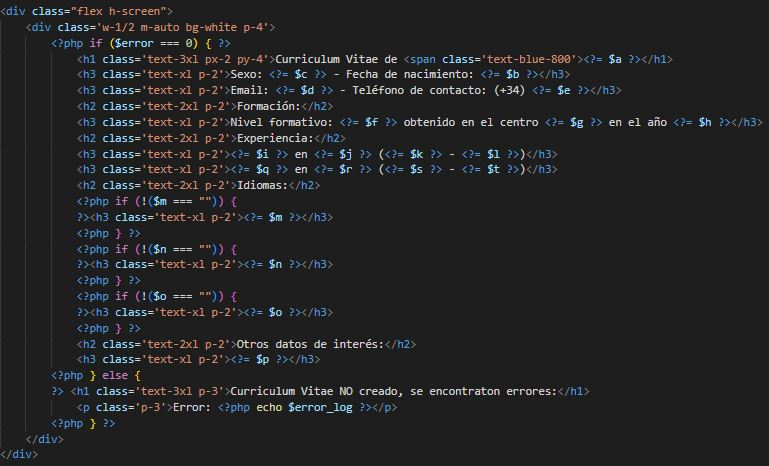